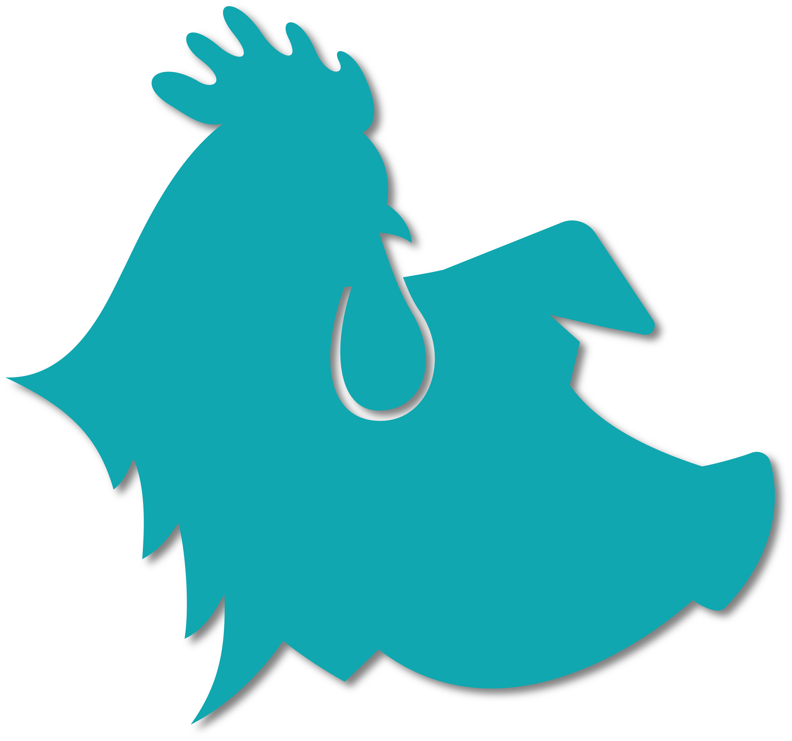

<div
  fxLayout="row"
  fxLayoutAlign="center"
  fxLayoutGap="gappx"
  class="color-white">
  <h3 [routerLink]="['/home']" class="cursorPointer">Framework LGPD</h3>
</div>

<ng-material-multilevel-menu
  [configuration]="config"
  [items]="this.menu"
  (selectedItem)="selectedItem($event)">
</ng-material-multilevel-menu>

<!--<div class="bottom-img-wrapper">
  
</div>-->